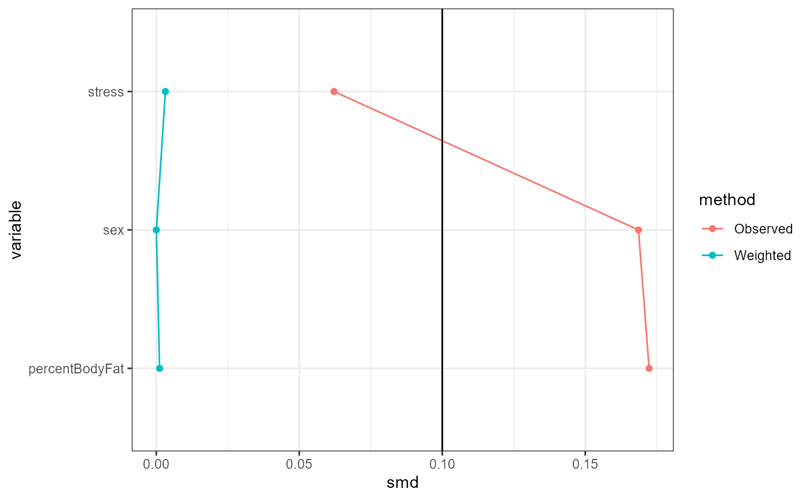
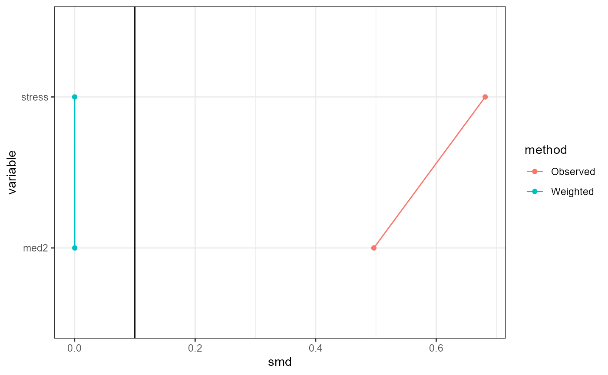

Inverse probability or odds weighting-based transportability analysis
Core Clinical Sciences
transportIP.RmdIntroduction
In this vignette, we demonstrate how to use
TransportHealth for weighting-based transportability
analysis for instances where mergeable individual participant-level data
(IPD) is available in both the original study and target sample.
Brief Introduction to IOPW and IPPW
For transportability scenarios, where the original study population
is a separate population to the target population of interest, we can
use
inverse odds of participation weighting (IOPW)approach.
When the original study population is a subset of the target
population of interest, we refer to this as generalizability scenarios;
here, we can use
inverse probability of participation weighting (IPPW)
approach.
Both the IOPW and IPPW approaches are analogous to the propensity
score weighting approach, such as
inverse probability of treatment weighting (IPTW) that aims
to adjust for confounding typically in a non-randomized study. They are
analogous in the sense we can use a model such as logistic regression to
estimate the probability of interest (i.e, study participation or
propensity to being treated). Under the transportability analysis
framework, the results from the original study are weighted based on the
inverse odds or probability that is calculated based on different
distribution of effect modifiers between the original study and target
sample data. The weights refer to the conditional probability of
participation in the target study.
Mathematical formulation
Let \(Y\) be the outcome of interest, \(A\) be the (binary, coded as 0 for control and 1 for treatment) treatment, \(S\) be the indicator for study participation (so that \(S=1\) means that the subject is in the population of the original study, while \(S = 0\) means that the subject is in the target population), \(X\) be covariates to control for confounding in the original study and \(E\) be effect modifiers. Let \(Y^0\) and \(Y^1\) be counterfactual outcomes associated with control and treatment, respectively. The primary objective of transportability analysis is to estimate the ATE in the target population: \[ATE = \mathrm{E}[Y^1 - Y^0 \,|\,S = 0].\]
Simply taking the difference in sample means using the original study data will only unbiasedly estimate the quantity \[\mathrm{E}[Y \,|\,A = 1, S = 1] - \mathrm{E}[Y \,|\,A = 0, S = 1],\] which is different from the target ATE due to confounding and the different distributions of effect modifiers.
Let \[w_1 = \begin{cases}\frac{1}{P(A = 1 \,|\,X, S = 1)} & \textrm{if } A = 1 \\ \frac{1}{P(A = 0 \,|\,X, S = 1)} & \textrm{if } A = 0\end{cases}\] and \[w_2 = \frac{P(S = 0 \,|\,E)}{P(S = 1 \,|\,E)}.\] To control for confounding, the estimator \[\frac{1}{\sum_{i=1}^n w_{1,i}I(A_i = a)}\sum_{i=1}^n w_{1,i}YI(A_i = a)\] will unbiasedly estimate the quantity \[\mathrm{E}[Y^a \,|\,S = 1],\] which uses the first set of weights \(w_1\) and is the IP weighting approach in causal inference. However, to estimate the target ATE, the estimator \[\frac{1}{\sum_{i=1}^n w_{1,i}w_{2,i}I(A_i = a)}\sum_{i=1}^n w_{1,i}w_{2,i}YI(A_i = a)\] should be used instead, which incorporates the second set of weights \(w_2\) to unbiasedly estimate the target ATE. This is extended to estimate the coefficients of any marginal structural model in the target population in the same manner as IP weighting: more specifically, the marginal structural model coefficients are estimated by fitting regression models on the original study data with the weights \(w_1w_2\).
For more information, check out Hern{'}an and Robins’ book on causal inference (Hernán and Robins 2024) and Ling, et al.’s application of IOPW to transportability analysis (Ling et al. 2022).
Example
Suppose we are interested in estimating the causal effect of a medication on systolic blood pressure in a target population, but we were only able to conduct an observational study using samples from the study population. To obtain unbiased causal effect estimates using the study sample, we account for the following covariates: sex, body fat percentage, and stress level.
We wish to know know that the effectiveness of the medication depends on two effect modifiers of stress levels and whether patients are taking another medication.
Note that the covariates adjusted for in the study data can also be effect modifiers.
Coded variables:
-
Medication -
med1-
1for treated -
0for non-treated
-
Systolic blood pressure (SBP) -
sysBloodPressure(continuous)-
Sex -
sex-
1for male -
0for female
-
Body fat percentage -
percentBodyFat(continuous)-
Stress level -
stress-
1for stressed -
0for normal
-
-
Medication 2 -
med2-
1for treated -
0for non-treated
-
Analyses
We can perform this analysis as follows.
First, the data from the study and target population may be separate
data frames or a merged data frame in the R
environment.
If they are separate, put them together in a
listobject; there is no need to name the components, as the package will identify the study data as the dataset with response and treatment information. Because of this, make sure that the study data has the response and treatment columns, while the target data do not (which is the case 99% of the time). If they are merged, make sure thatThe response and treatment columns for the target data are
NA, and;There is a binary variable indicating which observations are in the study data and the target data, with participation being coded as
1orTRUE.
Suppose that we have the study and target data separately as follows.
names(testData)
#> [1] "studyData" "targetData"
print("Study data:")
#> [1] "Study data:"
head(testData$studyData)
#> sysBloodPressure med1 sex stress med2 percentBodyFat
#> 1 109.4347 1 1 0 0 16.84868
#> 2 115.9803 0 1 1 0 14.48698
#> 3 112.7886 0 1 0 0 15.53636
#> 4 107.6026 1 1 0 0 13.76442
#> 5 120.6845 0 0 1 0 30.08657
#> 6 113.4424 0 1 0 0 16.23256
print("Target data:")
#> [1] "Target data:"
head(testData$targetData)
#> sex stress med2 percentBodyFat
#> 1 0 1 0 26.12896
#> 2 1 1 0 12.04972
#> 3 1 1 0 12.55972
#> 4 0 0 1 27.07130
#> 5 1 1 0 11.85846
#> 6 0 1 0 27.64520After merging the data, we can now perform transportability analysis
based on the IOPW approach using the transportIP
function.
transportIP(msmFormula,
propensityScoreModel,
participationModel,
propensityWeights,
participationWeights,
treatment,
participation,
response,
family,
method,
data,
transport,
bootstrapNum)Arguments for the transportIP function
This function requires specification of the following arguments:
msmFormula: A formula expressing the marginal structural model (MSM) to be fit.propensityScoreModel: A formula or aglmobject expressing the propensity model, i.e. a model of treatment assignment in terms of covariates.
If a formula is provided, logistic regression is used by default.
Custom propensity weights from other weighting methods can also be
provided to the customPropensity argument instead; in this
case, do not set propensityScoreModel because it is
NULL by default and will be overridden.
-
participationModel: A formula or aglmobject expressing the participation model, i.e. a model of study participation in terms of effect modifiers.
If a formula is provided, logistic regression is used by default.
Custom participation weights from other weighting methods can also be
provided to the customParticipation argument instead; in
this case, do not set participationModel because it is
NULL by default and will be overridden.
-
family: The type of MSM to be fit.
This can be any of the families that are used in glm or
one of "coxph" or "survreg". The latter
options are for survival analysis and will use default options of these
methods from the survival package.
data: The study and target data, separate or mergedtransport: This argument can be used to specify whether a transportability or generalizability analysis will be performed.
By default (transport = true), transportability based on
IOPW is used.
Generalizability analysis weighs by IPPW instead of than IOPW.
Specification of transportability analysis
These components are put together as follows.
Recall that: - sysBloodPressure is the response
med1is the treatmentsex,percentBodyFat, andstressare covariates to be controlled in the original studymed2(other medication) andstressare effect modifiers of interest.
result <- TransportHealthR::transportIP(
# MSM formula
msmFormula = sysBloodPressure ~ med1,
# Propensity model
propensityScoreModel = med1 ~ sex + percentBodyFat + stress,
# Participation model
participationModel = participation ~ stress + med2,
# Type of MSM
family = gaussian,
# Data frame
data = testData,
# Transportability or generalizability specification argument
transport = T)Producing statistical results
To show the results of the analysis, we can use the
base::summary function, similarly as one would use the
lm function for fitting a linear model.
This prints out covariate balance tables pre- and post-weighting for covariates between treatment groups (using propensity weights only) and effect modifiers (using participation weights only) between original study and target data, as well as a summary output of the MSM model fit with the correct standard errors calculated using bootstrap.
For the effect modifiers balance table, the weights used are inverse odds for study data and 1 for target data in a transportability analysis, and inverse probability for all observations in a generalizability analysis.
Note that if custom participation weights are provided, the balance tables default to transportability analysis since only the weights for observations in the study data are provided.
base::summary(result)
#> Absolute SMDs of covariates between treatments before and after weighting:
#> variable smd method
#> sex sex 1.686088e-01 Observed
#> percentBodyFat percentBodyFat 1.723317e-01 Observed
#> stress stress 6.216350e-02 Observed
#> sex1 sex 3.720148e-05 Weighted
#> percentBodyFat1 percentBodyFat 1.157406e-03 Weighted
#> stress1 stress 3.204378e-03 Weighted
#> Absolute SMDs of effect modifiers between study and target populations before and after weighting:
#> variable smd method
#> stress stress 0.6813098772 Observed
#> med2 med2 0.4965440683 Observed
#> stress1 stress 0.0001397205 Weighted
#> med21 med2 0.0002326560 Weighted
#> MSM results:
#>
#> Call:
#> stats::glm(formula = msmFormula, family = family, data = toAnalyze,
#> weights = finalWeights)
#>
#> Coefficients:
#> Estimate Std. Error t value Pr(>|t|)
#> (Intercept) 116.715 0.169 690.31 < 2e-16 ***
#> med11 -1.771 0.497 -3.56 0.00039 ***
#> ---
#> Signif. codes: 0 '***' 0.001 '**' 0.01 '*' 0.05 '.' 0.1 ' ' 1
#>
#> (Dispersion parameter for gaussian family taken to be 69.24548)
#>
#> Null deviance: 71451 on 999 degrees of freedom
#> Residual deviance: 69107 on 998 degrees of freedom
#> AIC: 6333
#>
#> Number of Fisher Scoring iterations: 2The transportIP object produced by the
transportIP function contains the model fitting objects for
the propensity model, the participation model and the MSM. You can use
methods like coef and residuals on these
objects themselves. This is not implemented by the package because they
are not as useful as implementing summary.
Positivity and conditional exchangeability are two keyassumptions that can affect the validity of transportability analysis.
Positivity is the assumption that at all observed levels
of covariates and effect modifiers, the probabilities of being in the
treatment group and being the study are neither 0 nor 1,
respectively.
- To evaluate this assumption for the treatment assignment and study
participation, use the
plotfunction withtype = "propensityHist"ortype = "participationHist", respectively. This outputs mirrored histograms of probabilities of being in the treatment group for different treatment groups or of participating in the study for the study and target data, respectively. Non-overlap of the ranges of the histograms suggest violations of the positivity assumption (Wizard, n.d.b).
base:::plot(result, type = "propensityHist")
base:::plot(result, type = "participationHist")Conditional exchangeability is roughly the assumption
that the only possible confounding is due to the controlled covariates
and effect modifiers. Under this assumption, IOPW estimates will be
reliable if the weighted distributions of covariates and effect
modifiers are similar between treatment groups and the study and target
data, respectively. This can be (partially) evaluated using standardized
mean differences (SMDs), which are shown in table form by the
summary function. The plot function with
type = "propensitySMD" or
type = "participationSMD" provides graphical versions of
these tables. A general guideline is that an SMD of below 0.1 indicates
balance, but this threshold is arbitrary and left to the choice of the
analyst (Wizard, n.d.a).
base::plot(result, type = "propensitySMD")
base::plot(result, type = "participationSMD")
Model coefficient plots showing confidence intervals of the effect
estimates are provided by plot function with
type = "msm". The standard errors are the correct ones
calculated by bootstrap.
base::plot(result, type = "msm")
Note that all plot outputs are designed to be generated with
ggplot2. They can be customized further.